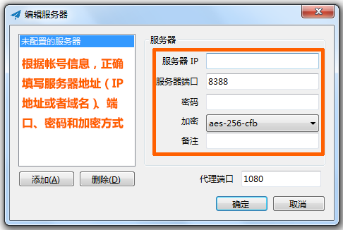
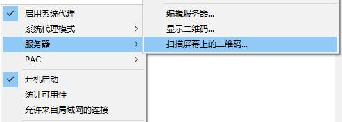
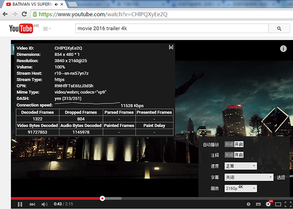

影梭 Shadowsocks
Windows上使用影梭教程
Windows
一、下载Windows下的影梭软件
Win7、XP、Vista系统百度网盘下载地址 ，提取密码：fjfs
Win8系统百度网盘下载地址，提取密码：brbs
二、下载后解压，解压后运行影梭
注意:如果XP下载后双击打不开，提示： 影梭 应用程序正常初始化失败。
说明系统缺少.net framework
.NET Framework 2.0 版本，适合 Windows XP 用户，链接:http://pan.baidu.com/s/1bne1job 密码：w1fk
.NET Framework 3.5 版本，适合 Windows 7 用户：
链接 :https://www.baidu.com/s?ie=UTF-8&wd=.NET+Framework+3.5
.NET Framework 4.0 版本，适合 Windows 8.1 用户，
链接: :http://pan.baidu.com/s/1hqw8yOk 密码: qhu1
Windows8.1版本兼容微软最新发布的Windows10系统！

三、首次运行，弹出编辑服务器窗口，请输入您在用户中心获取的连接信息。正确填写服务器地址、端口、密码和加密方式，或者直接扫描二维码，然后点确定


点确定后，右下角弹出提示

四、右键程序图标，弹出主菜单，勾选“启用系统代理”

五、打开任意浏览器（IE/Chrome/Firefox等），即可开始科学上网
